[SH4] The Intent Behind Henry and Walter's Gazes?!
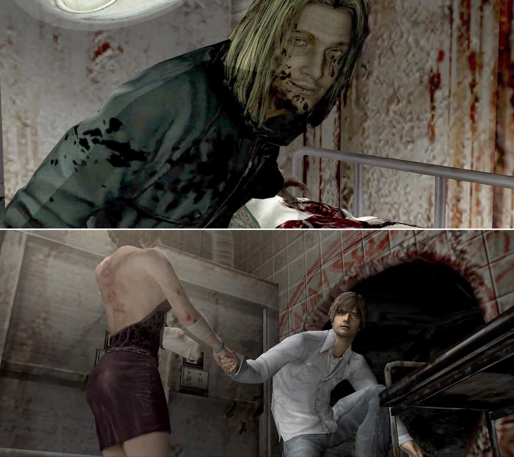
The Effective Use of the Characters' Gazes…?
![[SH4] The Intent Behind Henry and Walter's Gazes?!](img/da40.png)
This is a mirror of the DeviantArt version linked above, provided as a backup and for easier access.

In an interview for the official guide, Tsuboyama-san was like, "Walter's gaze is subtly shifted with the intention of making it look like you don't know what he's thinking." (Although some community resources translate this as "ever-so-slightly averted," the original text says "subtly shifted," so it refers to the gaze itself being intentionally off.)
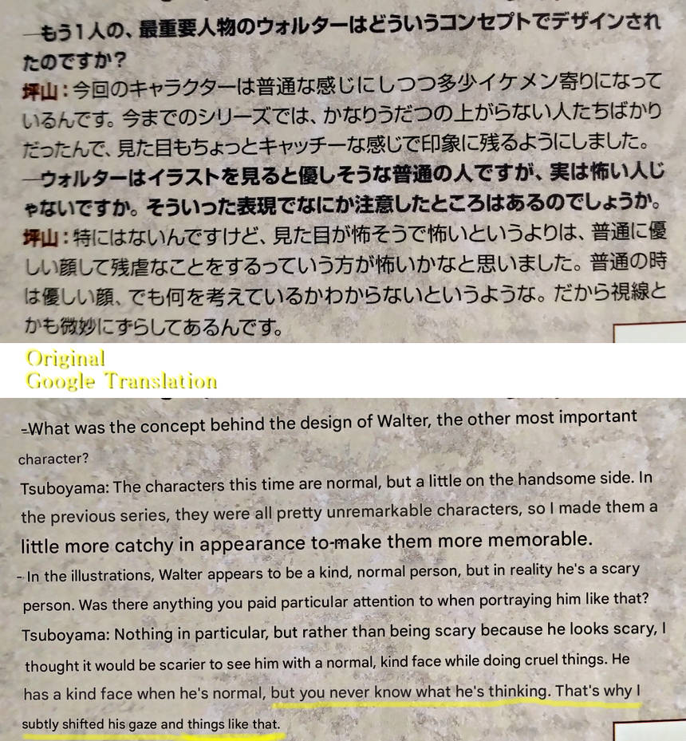
Sure, when you see it in the cutscenes, his eyes are slightly wall-eyed and sanpaku-style (with the whites visible). Because it's hard to tell where he's looking, that gaze heightens the player's sense of unease.
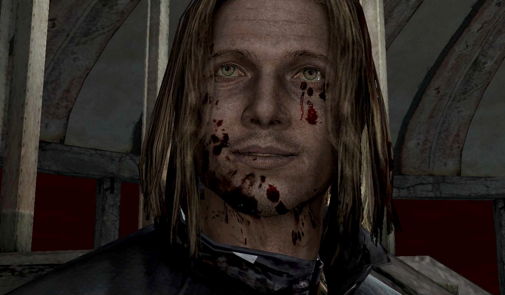
In the midst of that, his eyes only meet yours perfectly when it's confirmed he's a "dangerous guy" and when you peer through the door hole.
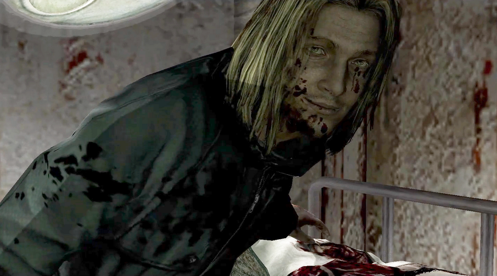
But even then, in the peephole scene, he doesn't blink even once, which makes the direction feel even more unsettling.
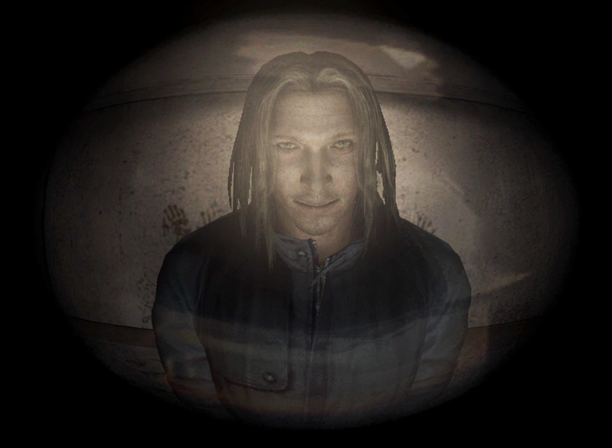
Usually, he stirs up the player's anxiety with that out-of-focus gaze, but at key moments, he stares right back at you, making your heart skip a beat. It's a very effective use of gaze.
In this way, gazes are used consciously.
Of course, Henry's too.
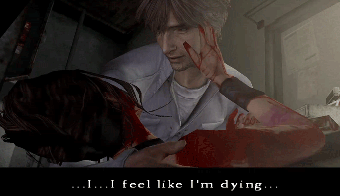
The subtle shifts in his gaze in this cutscene are effective, aren't they? At the very end, he looks Cynthia properly in the eye. So gentle.
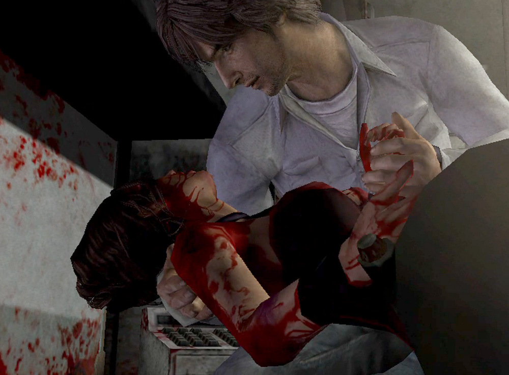
There is another gaze drawn intentionally as well.
Intentionally...
Intentionally...
Intentionally...?
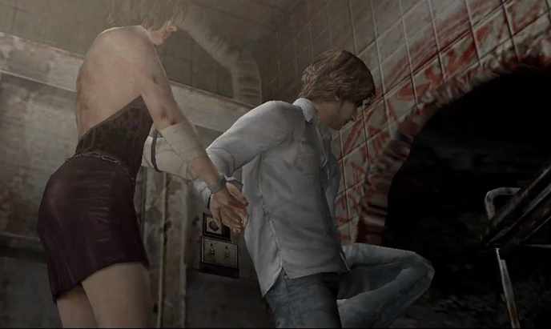
This is a sweet scene where Henry holds Eileen's hand and tries to take her back through the hole. Here too, of course, his gaze is conscious of...
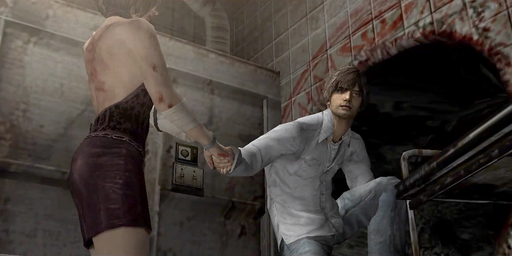
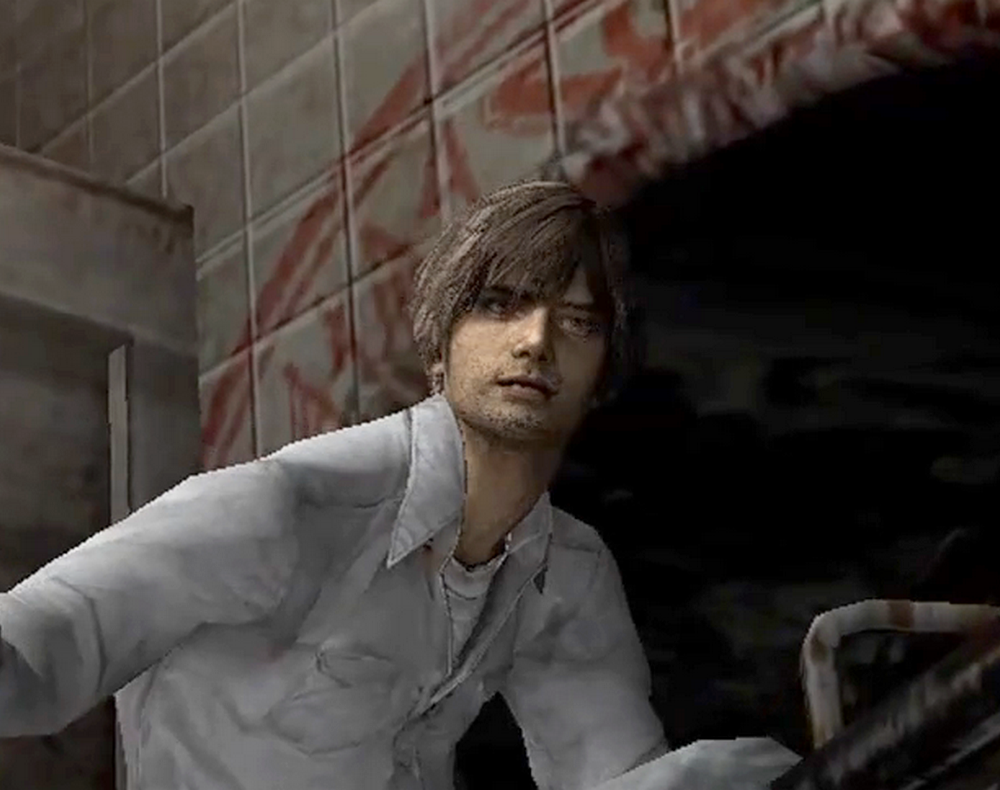
If you take a close-up look at Henry's face, you can see he's not looking at her at all. Honestly, it's so awkward it's funny lol.
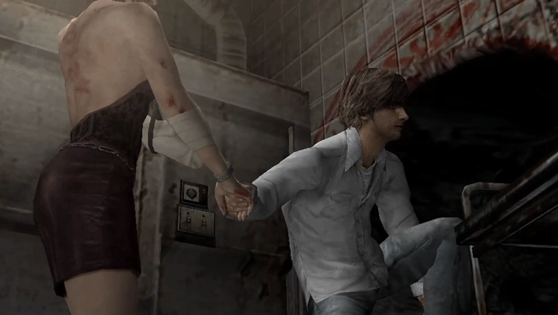
Until the very end, he keeps looking in a different direction.
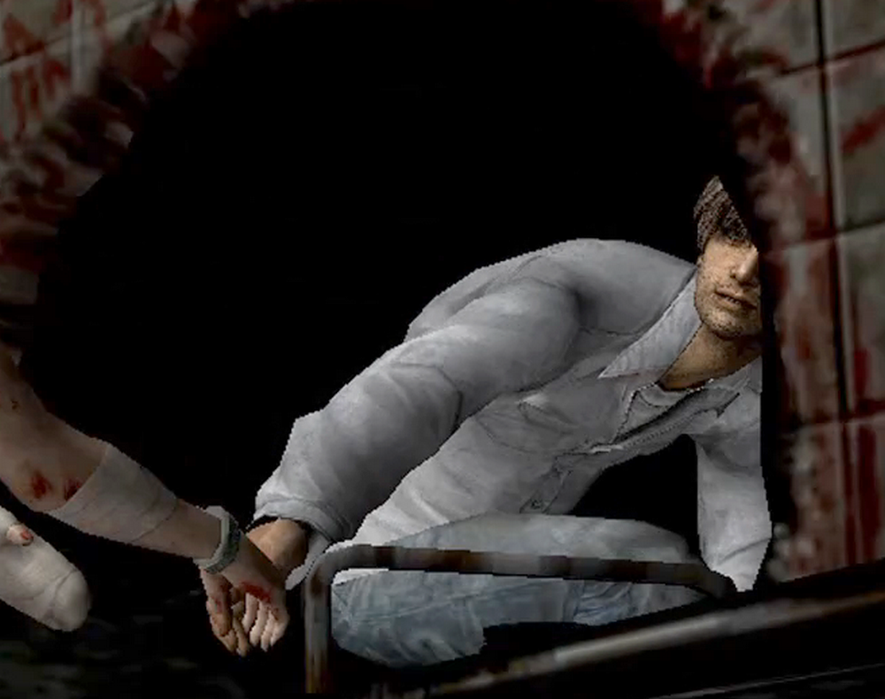
This, you see, is because if he looks at her, the angle inevitably draws his eyes to her breasts. And since he might be able to see them, it's a gentlemanly consideration, or perhaps self-restraint. Hahaha. ...Right? What other interpretation could there be?
Well, her party dress is so revealing.
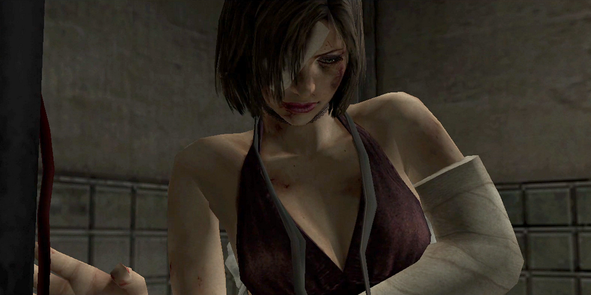
Eileen can't see the hole and therefore can't enter it, so even in the cutscene she stops just short of it. And in the cutscenes before and after that, Henry's clearly looking her in the eyes, and the movement of his gaze is drawn deliberately.
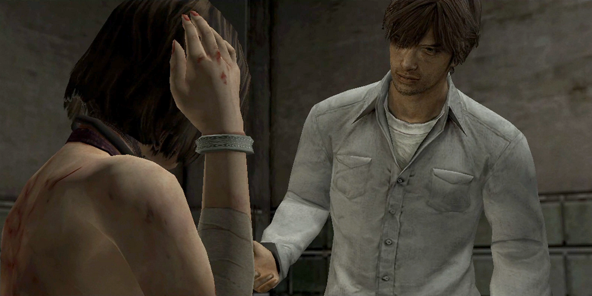
When you think about these kinds of small details, this part alone can't be that careless. It seems highly likely that it was intentional! When I think about it, I can't help but laugh. The attention to detail from the people who created this scene is genius! lol
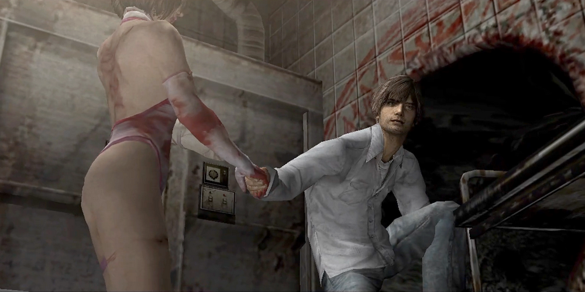
Of course, even if her costume is different, his attitude stays the same. Henry's trying not to look at her. What a gentleman!
⚠️ Take it with a grain of salt.